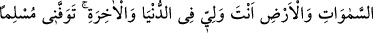

övünmekten alıkoyan bir şey olurdu.
Bir hadiste: “Müslüman bir kimsenin malının harcandığı en kötü yer binalardır.”[94]
buyrulmuştur.
Behlül, kardeşi Halife Hârun’un yaptırdığı büyük bir sarayın duvarlarına şöyle
yazmıştı:
“Ey Hârun! Dîni alçaltıp tıyni (çamuru) yükselttin, nassı bırakıp cassı (kireci)
yükselttin. Şâyet bu sarayı kendi malından yaptırdıysan israf etmişsin. Allah ise
müsrifleri sevmez. Başkasının malından yaptırmışsan o zaman da zulmetmişsin. Allah
zâlimleri de sevmez.”
101. “Ey Rabbim! Sen bana mülkten (nasibimi) verdin ve bana rüyaların
yorumunu öğrettin. Ey gökleri ve yeri yaratan! Dünyada da ahirette de sâhibim
Sensin! Beni müslüman olarak öldür ve beni sâlihler arasına kat!”
Rivâyet edilir ki Yâkub (a.s.) Yûsuf (a.s.)’la birlikte yirmi dört sene yaşadı ve Şam
bölgesinde babası İshak’ın yanına gömülmesini vasiyet etti. Sac ağacından mâmûl
tabutunu bizzat Yûsuf oraya nakletti. Amcası Iys’ın vefatı da babasının vefatı ile aynı
zamana denk geldiğinden aynı kabre defn edildiler. Zaten ikisi de aynı batında
doğmuştu. Ebu’l-Leys’in Tefsiri’nde belirtildiği üzere ömürleri yüz kırk yedi seneydi.
Yûsuf (a.s.) daha sonra Mısır’a döndü. Babasından sonra yirmi üç sene daha yaşadı.
Onun da ömrü yüz yirmi senedir.
Allah sebepleri halk edip iki yakasını bir araya getirince, işleri tam olarak düzene
girince, her şeyin artık kemale erdiğini görünce Yûsuf (a.s.) sonunun yaklaştığını, ölmek
üzere olduğunu ve dünya nimetlerinin asla sürekli olmadığını anladı. Nitekim şöyle bir
söz vardır:
Bir şey tamam olunca yaklaşır sonu,
‘Tamamlandı’ denen şeyin bekle hemen zevalini.
Bu yüzden Yûsuf (a.s.) Allah’tan güzel bir âkıbetle ölmeyi istedi.
Kâşifî şöyle der: Yûsuf (a.s.) babasını rüyada gördü. “Sana kavuşmayı çok arzu
ediyorum. Üç güne kadar yanıma gelesin” diyordu. Yûsuf (a.s.) rüyasından uyandı.